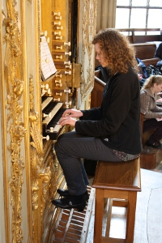

Recordings
|

|
|
Susanna plays the Robert Clicquot organ in
the chapel of the Palace of Versailles, France |
Live Recording in Recital
1979 Brombaugh organ
Christ Episcopal Church
Tacoma, WA
J.S. Bach—Prelude and Fugue in b minor, BWV 544
Live Recording in Recital
2012 C.B. Fisk organ
Christ Episcopal Church
Andover, MA
J.S. Bach—Schmücke dich, o liebe Seele, BWV 654
Live Recording in Recital
2012 C.B. Fisk organ
Christ Episcopal Church
Andover, MA
Charles Tournemire—"L’Épiphanie" from L'Orgue Mystique, op. 55
- Prélude à l’Introït
- Offertoire
- Élévation
- Communion
- Fantaisie
2012 C.B. Fisk organ
Christ Episcopal Church
Andover, MA
Louis Vierne—“Scherzetto” from 24 Pièces en Style Libre, op. 31
Live Recording at “Rising Star” Recital for the American Guild of Organists National Convention
2003 Lively-Fulcher organ
Christ Church Cathedral
Nashville, TN
Jeanne Demessieux—Te Deum, op. 11
Live Recording in Recital
1965 Flentrop organ
St. Mark’s Cathedral
Seattle, WA
Paul Hindemith—Sonata III
- Ach Gott, wem soll ich’s klagen
- Wach auf, mein Hort
- So wünsch ich ihr
1965 Flentrop organ
St. Mark’s Cathedral
Seattle, WA
Dietrich Buxtehude—Präludium in g-moll, BuxWV 149
1995 Brombaugh Organ
Lawrence University
Appleton, WI
Stephen Paulus—“As If the Whole Creation Cried” from Triptych
1995 Brombaugh organ
Lawrence University
Appleton, WI